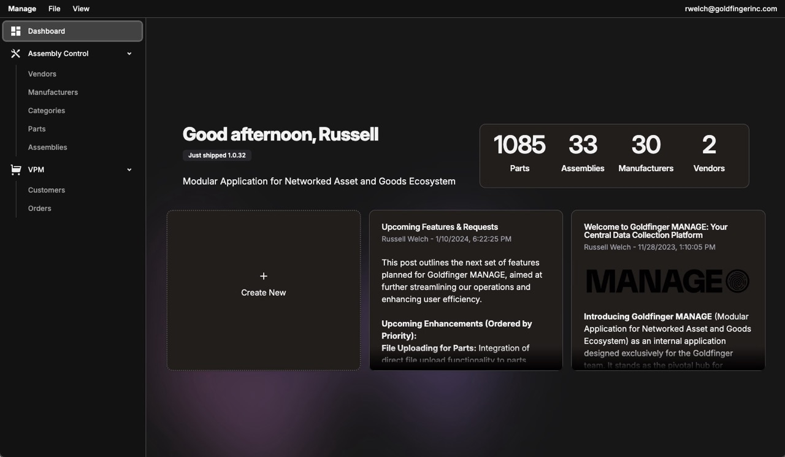
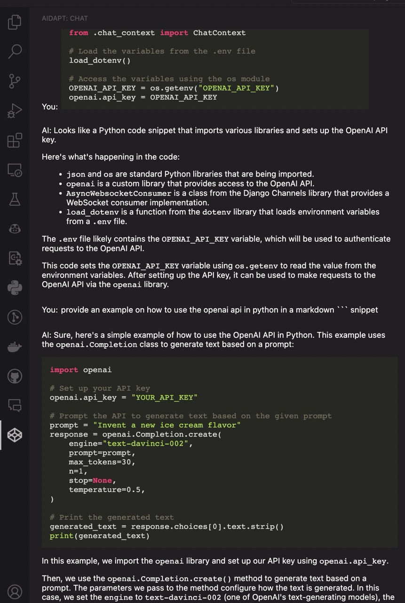
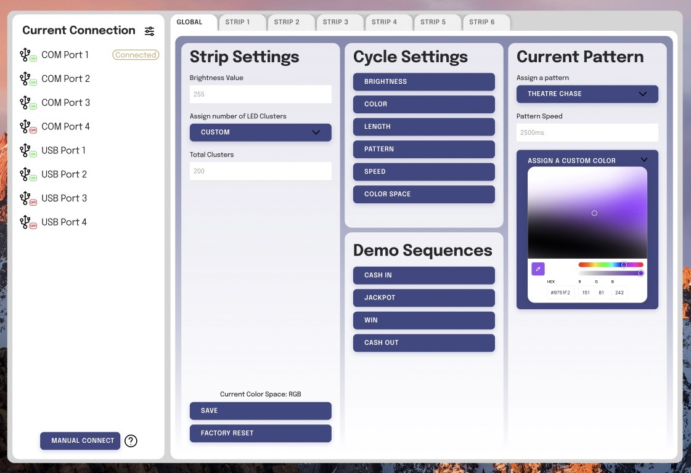
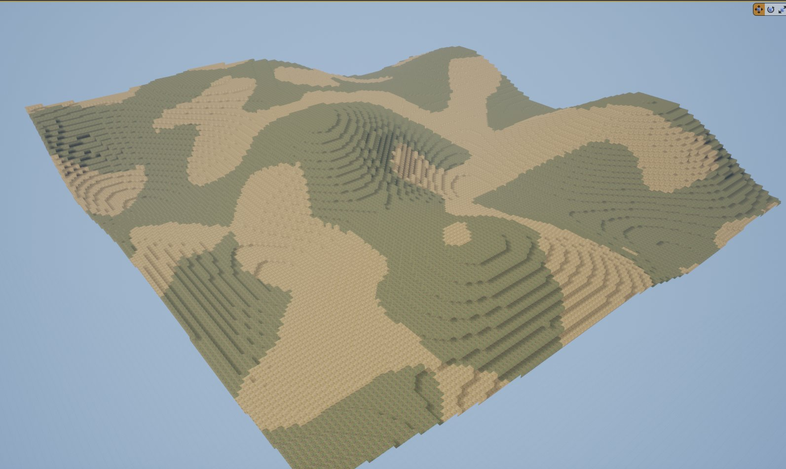
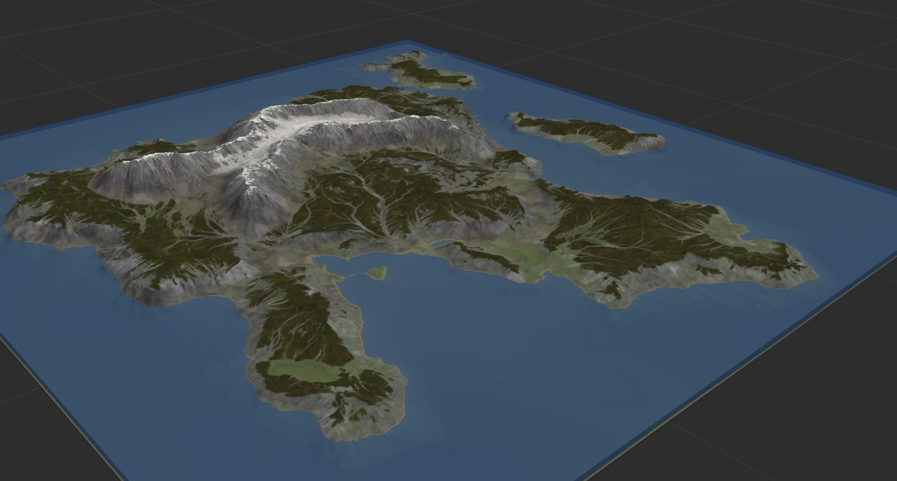

Goldfinger MANAGE (May 2023 - Present)
Since May 2023, I've been working on Goldfinger MANAGE, an internal application designed to enhance company-wide data management. This system centralizes data related to product development, inventory, and manufacturing processes, employing a tech stack that includes JavaScript, Electron, React, and Supabase.
Aidapt (February 2023 - July 2023)
From February to July 2023, I developed Aidapt, a VSCode extension that serves as an AI-powered coding assistant. Utilizing OpenAI's API, it helps to streamline the coding process by providing contextual assistance, implemented using JavaScript, React, and Supabase.
Goldfinger Car Head Unit Research (December 2023 - April 2023)
My research on developing a Carplay/Android Auto compatible car head unit for Goldfinger from December 2023 to April 2023 involved exploring Swift UI and Android to create a user-friendly interface for in-car systems.
Goldfinger LED Controllers (July 2022 - January 2023)
From July 2022 to January 2023, I was involved in developing API solutions for controlling LED lighting on Goldfinger gaming monitors. The project aimed at enhancing the gaming experience through interactive light patterns, incorporating C# and Arduino technology.
Goldfinger POS System (May 2022 - August 2022)
Between May and August 2022, I contributed to the development of a POS system for Goldfinger's casino operations. This system, designed to streamline customer interactions, involved extensive database management and UI development in a Java and Linux environment.
Voxel Terrain System in Unreal Engine 4 (January - March 2021)
In early 2021, I worked on creating a voxel-based terrain generation system in Unreal Engine 4. This project involved implementing procedural terrain generation using C++, focusing on efficient data structures and rendering techniques.
Arma 3 Terrain Creation (June 2017 - Sep 2019)
From June 2017 to September 2019, I dedicated myself to creating terrains for Arma 3, utilizing a suite of tools including World Creator, Blender, and Arma's modding tools. My notable contributions include 'Chernarus Redux,' which amassed over 200,000 downloads, and 'Cytech Industries,' reaching over 30,000 downloads. In addition to these public releases, I also developed several custom terrains for private servers and content creators, exploring various aspects of simulation and world-building in game development.